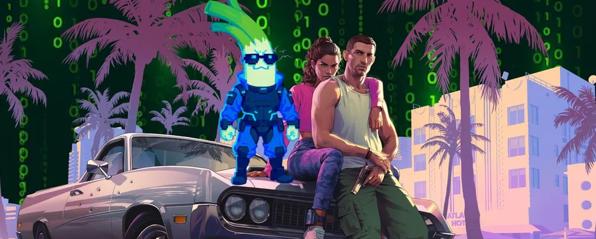
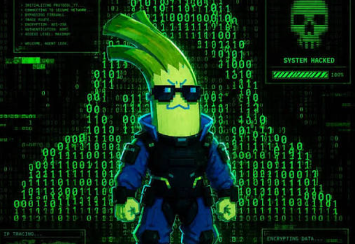

Um resumo sobre o grande vazamento de GTA VI, a repercussão do caso e as informações oficiais divulgadas pela Rockstar Games.

Introdução
GTA VI é um dos jogos mais aguardados da atualidade. Antes mesmo de sua apresentação oficial completa, o projeto ganhou muita atenção depois de um grande vazamento de materiais de desenvolvimento em 2022.
Nesta página você encontrará um resumo sobre o que aconteceu, quem esteve envolvido, a repercussão do caso e algumas informações oficiais já divulgadas pela Rockstar Games.
O vazamento de 2022
Em setembro de 2022, diversos vídeos de uma versão ainda em desenvolvimento de GTA VI foram publicados na internet. O material chamou atenção porque mostrava partes do jogo muito antes de seu lançamento.
Quem esteve envolvido?

Imagem ilustrativa sobre segurança digital e o vazamento de informações.
O caso foi ligado a Arion Kurtaj, integrante do grupo de hackers Lapsus$. Segundo informações apresentadas no processo no Reino Unido, ele invadiu os sistemas da Rockstar Games e divulgou materiais do jogo na internet.
O que aconteceu depois?
O vazamento teve grande repercussão na comunidade gamer e também levantou discussões sobre segurança digital, proteção de dados e os prejuízos que uma invasão pode causar durante o desenvolvimento de um jogo.
Mesmo depois do vazamento, a Rockstar informou que o desenvolvimento do próximo GTA continuaria normalmente.
Vídeo relacionado ao tema
O arquivo abaixo faz parte do material usado nesta atividade para representar o assunto estudado.
Por que esse vazamento foi tão comentado?
GTA é uma das franquias mais conhecidas da indústria dos jogos. Por isso, a divulgação antecipada de materiais de um projeto ainda em desenvolvimento chamou atenção rapidamente em sites, redes sociais e fóruns.
Além da curiosidade dos jogadores, o caso mostrou como ataques virtuais podem afetar grandes empresas e expor trabalhos que ainda não estavam prontos para serem apresentados ao público.
Também é importante lembrar que imagens de uma versão de desenvolvimento não representam necessariamente a qualidade final de um jogo.
Informações sobre o lançamento
A Rockstar Games informa atualmente que GTA VI será lançado em 19 de novembro de 2026 para PlayStation 5 e Xbox Series X|S.
Informação
Situação atual
Detalhe
Data de lançamento
Confirmada
19 de novembro de 2026
PlayStation 5
Confirmado
Lançamento previsto para a data oficial
Xbox Series X|S
Confirmado
Lançamento previsto para a data oficial
PC
Não confirmado
A Rockstar ainda não anunciou uma versão para PC
Plataformas e disponibilidade
PlayStation 5: confirmado oficialmente.
Xbox Series X|S: confirmado oficialmente.
PC: ainda sem anúncio oficial de lançamento.
Sobre requisitos para PC
A Rockstar ainda não publicou requisitos mínimos oficiais para PC.
Listas encontradas na internet são apenas estimativas enquanto a versão de PC não for anunciada.
Por isso, não é possível afirmar oficialmente quais processadores, placas de vídeo ou quantidade de memória serão necessários.
Por que ainda não há informações oficiais para PC?
Até o momento, a Rockstar apresenta GTA VI oficialmente para PlayStation 5 e Xbox Series X|S. Como uma versão para PC ainda não foi anunciada, também não existem requisitos oficiais de hardware para essa plataforma.
Isso significa que qualquer configuração de PC divulgada antes de um anúncio da empresa deve ser tratada como estimativa, e não como requisito oficial.
Conclusão
O vazamento de GTA VI ficou marcado como um dos casos mais comentados envolvendo um jogo ainda em desenvolvimento. Além de aumentar a curiosidade sobre o projeto, o episódio chamou atenção para a importância da segurança digital dentro de grandes empresas.
Atualmente, o melhor caminho para acompanhar o jogo é consultar as informações divulgadas pela própria Rockstar Games e separar dados oficiais de rumores ou estimativas publicadas na internet.